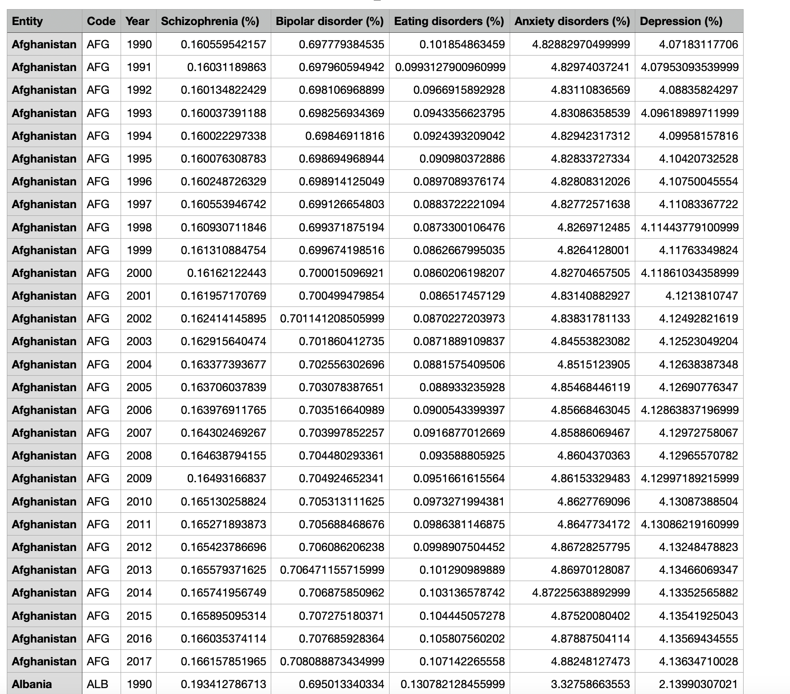

library(httr)
library(jsonlite)
url <- "https://datacatalogapi.worldbank.org/ddhxext/ResourceFileData?resource_unique_id=DR0090755&version_id=2023-09-27T16:44:25.8023254Z"
# Make the GET request
response <- GET(url)
response.text <- content(response, "text")
data <- fromJSON(response.text)
details <- data$Details
# To write this data to a CSV file
write.csv(details, file = './api_r.csv', row.names = FALSE)Data Gathering
Download Data
Mental Health Data
Discription
Mental health Depression disorder Data. What are mental health disorder types?
How many people suffer these disorder types?
How many people in your country have depression?
Is depression is higher in men or women?
Does depression leads to suicide? What percentage?
Which age group has more depression?

Eating Disorder Data
Description
Share of population with eating disorders. This is estimated as the total number of cases with eating disorders relative to the population of a country.
This indicator only includes anorexia nervosa and bulimia nervosa (i.e. it does not include binge eating disorder and other specified feeding or eating disorder (OSFED)).

Discomfort Speaking to others Data
Discription
Respondents were asked how comfortable a local person would feel speaking about anxiety or depression with someone they know. This shows the share that gave each response.

Countries in Continent Data
Discription
The relationship between countries and their continents.
download link

API
Description
The World Development Indicators (WDI) is the primary World Bank collection of development indicators, compiled from officially-recognized international sources. It presents the most current and accurate global development data available, and includes national, regional and global estimates.
| Label | Value |
|---|---|
| Fiscal Yeay | FY21 |
| Publication Date | (July 2020) |
| Low Income Threshold | $1,035 or less |
| Lower Middle Income Range | $1,036 to $4,045 |
| Upper Middle Income Range | $4,046 to $12,535 |
| High Income Threshold | $12,536 or more |
| Number of economies | 189 |
| GNI Year | 2019 |
| Term of Income Classification | until 1 July 2021 |
Python Api Code
import requests
import pandas as pd
import json
import csv
# Define the API endpoint URL
url = "https://datacatalogapi.worldbank.org/ddhxext/ResourceFileData?resource_unique_id=DR0090755&version_id=2023-09-27T16:44:25.8023254Z"
# Make the GET request
response = requests.get(url)
# Check the response status
if response.status_code == 200:
data = response.json() # If the response contains JSON data, it can be accessed using the .json() method
else:
print("Failed to retrieve data. Status code:", response.status_code)
# Extract column names from the "MetaData" section
columns = [item['ColumnName'] for item in data["MetaData"]]
# Extract data from the "Details" section
details = data["Details"]
rows = []
for chunk in details:
row=[]
for key,value in chunk.items():
# Check if the value is None and replace it with an empty string if needed
value = value if value is not None else ''
row.append(value)
rows.append(row)
# Write data to a CSV file
with open('./Part2/Code/api_python.csv', 'w', newline='') as csvfile:
csv_writer = csv.writer(csvfile)
# Write the header row
csv_writer.writerow(columns)
# Write the data rows
csv_writer.writerows(rows)
print("CSV file 'api_python.csv' has been created.")